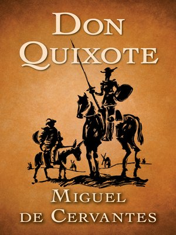
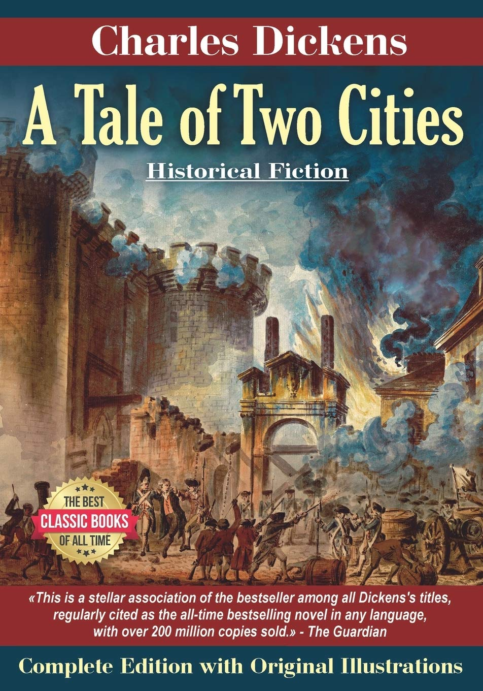
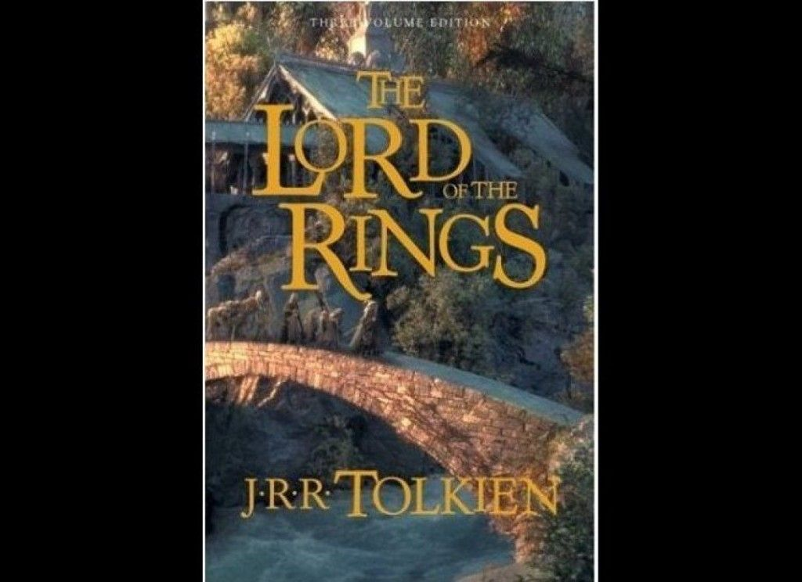
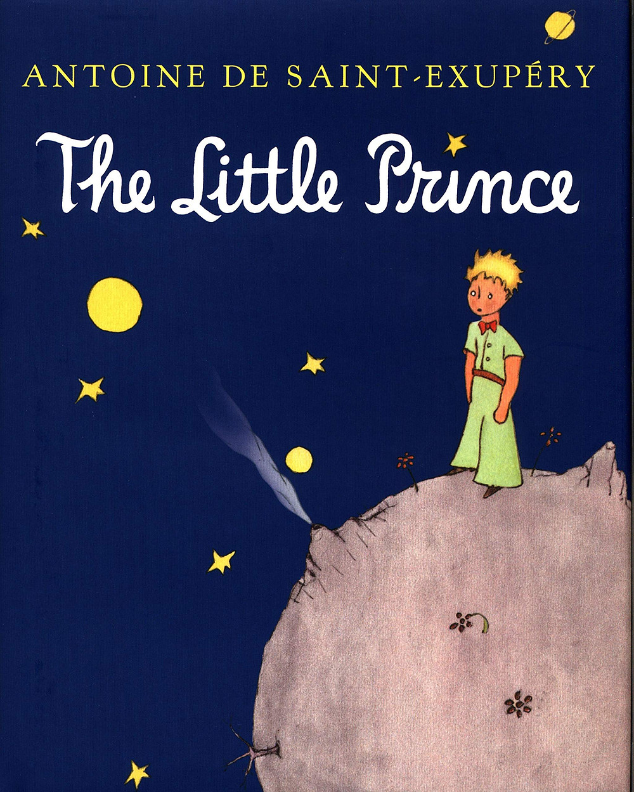
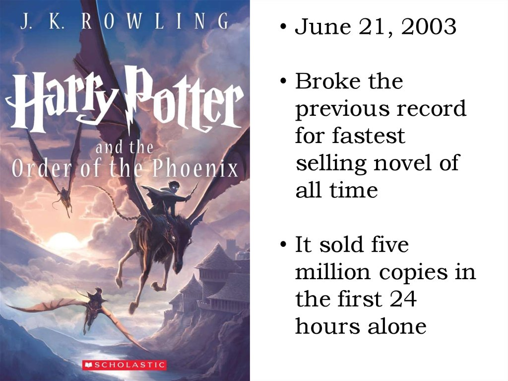

|  | This Book Don Quixote is written by the Spanish author Miguel De Cervantes. This book has been published in two parts in 1605 and 1615 and is considered to be one of the influential literary works from the Spanish Age and literacy canon. This Novel is thought to be the foundation of modern literature by the 20th century. anything. |
|  | A Tale of Two Cities, by Charles Dickens, deals with the major themes of duality, revolution, and resurrection. It was the best of times, it was the worst of times in London and Paris, as economic and political unrest lead to the American and French Revolutions |
|  | The Fellowship of the Ring, being the first part of The Lord of the Rings, was published 63 years ago today, on the 29th July 1954. As the first part of J.R.R. Tolkien’s The Lord of the Rings, the book forms the sequel to Tolkien’s 1937 book The Hobbit and starts off with Bilbo Baggins passing on his magical ring to his “nephew” Frodo. The exact nature of the Ring is revealed and Frodo embarks on a quest to take the Ring to Mordor to destroy it. The book sees Frodo, Sam, Merry and Pippin travel to Bree where they are joined by Aragorn who takes them on to Rivendell. At Rivendell, the Council of Elrond discusses the nature and history of the Ring, and thereafter a Fellowship is formed of Frodo, Sam, Merry, Pippin, Aragorn, Gandalf, Legolas, Gimli and Boromir. They travel south via Moria and Lothlórien and the book ends at Amon Hen. |
|  | Antoine de Saint-Exupéry's "The Little Prince" was first released in New York on April 6, 1943. The fairy tale about the likable little blond boy from the asteroid B 612 was instantly praised by critics—and has since gained a cult following. |
|  | J.K. Rowling finished the manuscript for Harry Potter and the Philosopher’s Stone in 1995. Represented by Christopher Little, the manuscript was rejected by dozens of publishers. Editors cited the story’s length and politically incorrect focus on boarding school as reasons for rejection. Bloomsbury eventually acquired the manuscript and ordered an initial print run of 500 hardback copies. Two hundred copies hit store shelves in June of 1997 with the remaining 300 sent to libraries. Later that year, the book earned the UK’s National Book Award and a gold medal in the Nestle Smarties Book Prize. These awards, along with positive reviews and word of mouth, made the book well-known in a matter of months – ensuring it would receive larger additional printings. Within two years of its publication, Philosopher’s Stone had sold more than 300,000 copies in the UK alone. |